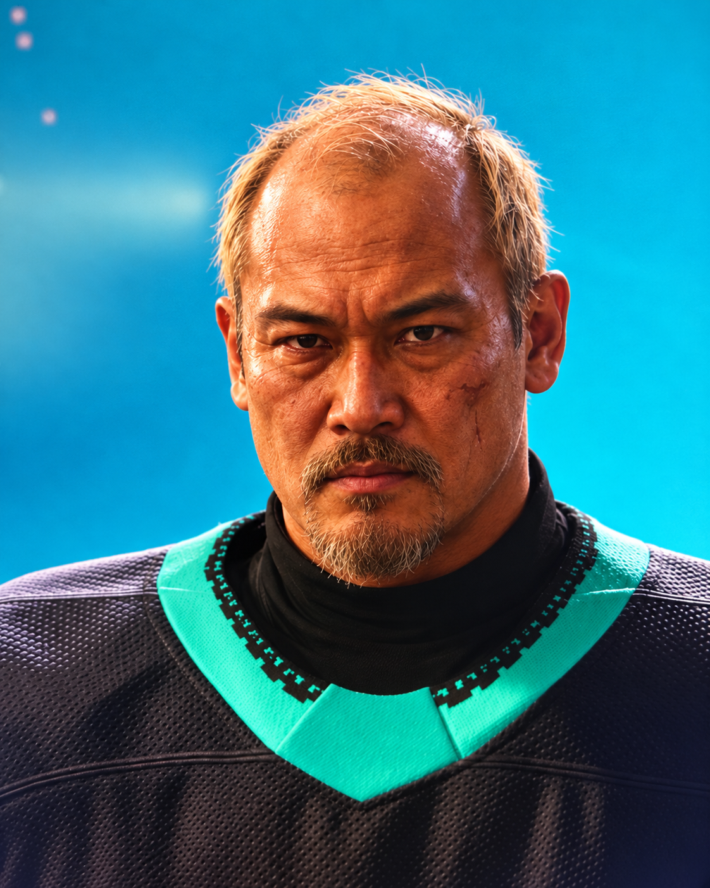
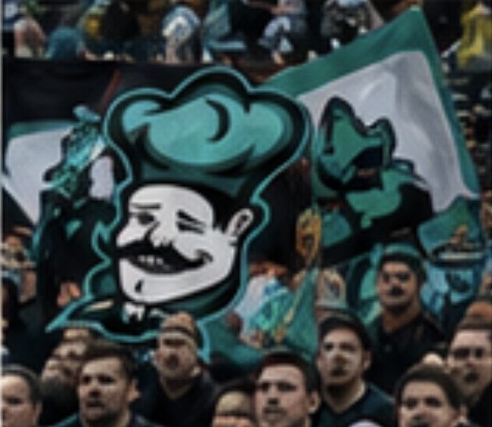

INTERVJU
”Du har ingen aning om vad du pratar om”
Bob Benson går till hårt angrepp mot kritiken efter Tackelbergas svaga start.
Läs artikeln →Intervjuer, analyser, krönikor och nyheter från Tackelberga Oliners.
Bob Benson går till hårt angrepp mot kritiken efter Tackelbergas svaga start.
Läs artikeln →
Den assisterande kaptenen om Tackelbergas fysiska identitet, slagskottet och målet om division 5.
Läs artikeln →Stjärnforwarden sågs lämna en nattklubb i centrala Stockholm sent under natten.
Läs artikeln →
Från division 8 till nya drömmar om Elite Cup – men vägen är långt ifrån rak.
Läs krönikan →
Passion, fysisk hockey och ett växande självförtroende har gjort backen till en allt viktigare del av laget.
Läs mer →